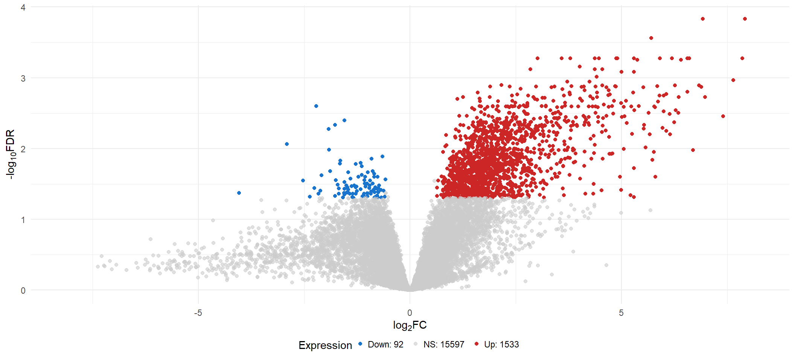
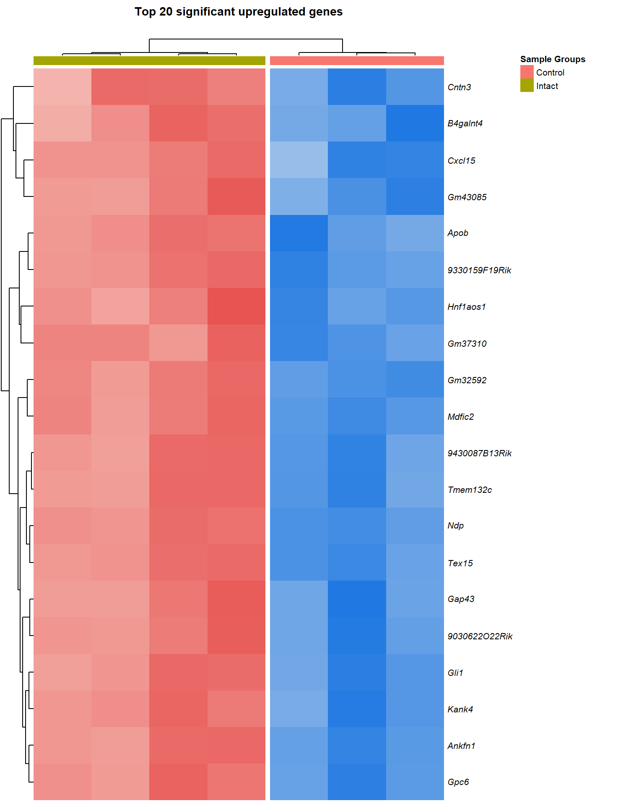
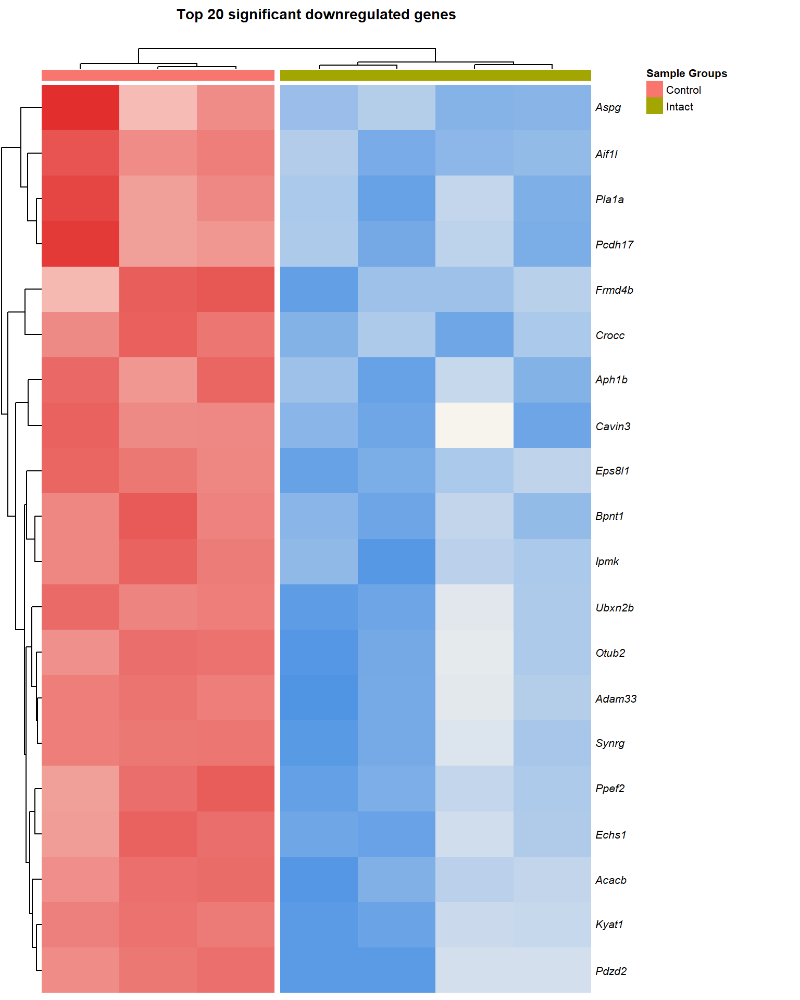
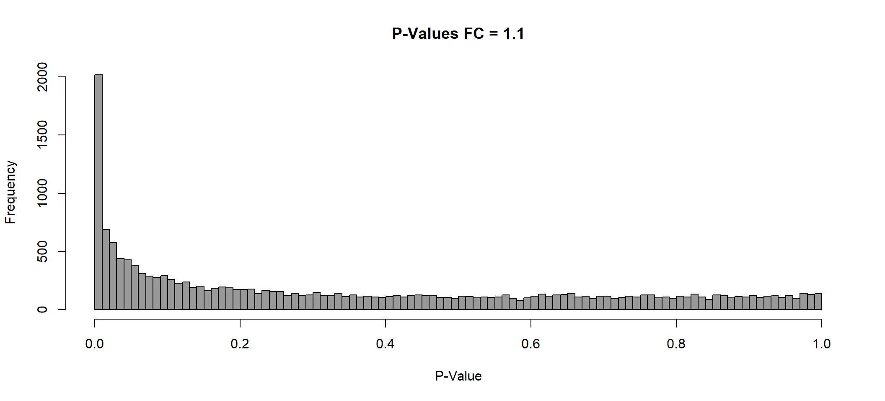
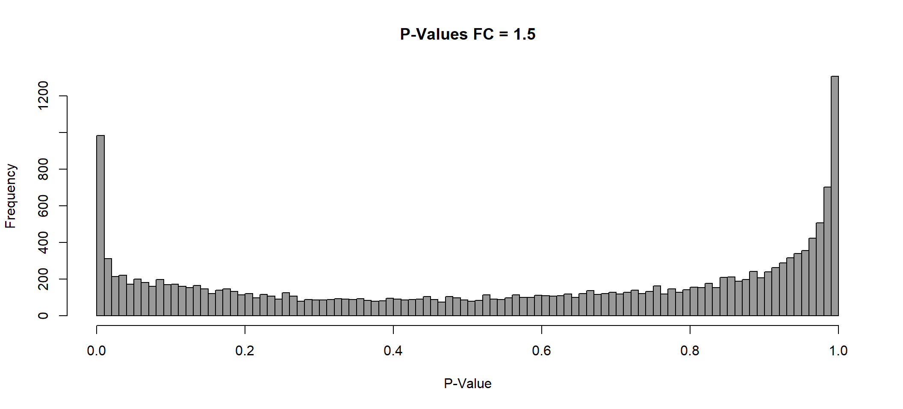
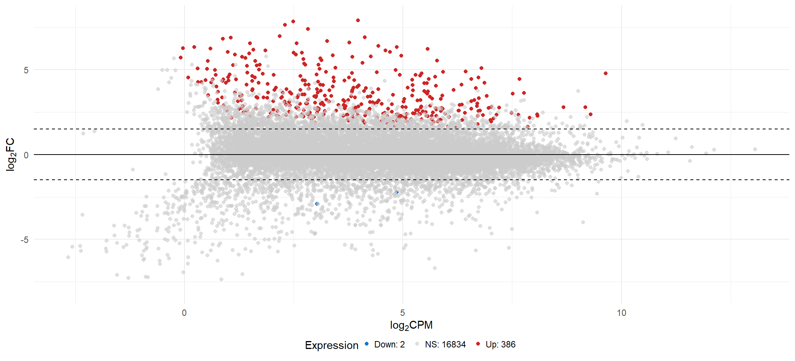

DGE Analysis
Ha M. Tran
22/08/2021
Last updated: 2023-09-16
Checks: 7 0
Knit directory:
Mouse_endometrial_transcriptome_2023/1_analysis/
This reproducible R Markdown analysis was created with workflowr (version 1.7.1). The Checks tab describes the reproducibility checks that were applied when the results were created. The Past versions tab lists the development history.
Great! Since the R Markdown file has been committed to the Git repository, you know the exact version of the code that produced these results.
Great job! The global environment was empty. Objects defined in the global environment can affect the analysis in your R Markdown file in unknown ways. For reproduciblity it’s best to always run the code in an empty environment.
The command set.seed(12345) was run prior to running the
code in the R Markdown file. Setting a seed ensures that any results
that rely on randomness, e.g. subsampling or permutations, are
reproducible.
Great job! Recording the operating system, R version, and package versions is critical for reproducibility.
Nice! There were no cached chunks for this analysis, so you can be confident that you successfully produced the results during this run.
Great job! Using relative paths to the files within your workflowr project makes it easier to run your code on other machines.
Great! You are using Git for version control. Tracking code development and connecting the code version to the results is critical for reproducibility.
The results in this page were generated with repository version 18c6463. See the Past versions tab to see a history of the changes made to the R Markdown and HTML files.
Note that you need to be careful to ensure that all relevant files for
the analysis have been committed to Git prior to generating the results
(you can use wflow_publish or
wflow_git_commit). workflowr only checks the R Markdown
file, but you know if there are other scripts or data files that it
depends on. Below is the status of the Git repository when the results
were generated:
Ignored files:
Ignored: .Rproj.user/
Untracked files:
Untracked: .gitignore
Untracked: 0_data/RDS_objects/DT.rds
Unstaged changes:
Modified: 0_data/RDS_objects/dge.rds
Modified: 0_data/RDS_objects/enrichGO.rds
Modified: 0_data/RDS_objects/enrichGO_sig.rds
Modified: 0_data/RDS_objects/fc.rds
Modified: 0_data/RDS_objects/lfc.rds
Modified: 0_data/RDS_objects/lmTreat.rds
Modified: 0_data/RDS_objects/lmTreat_all.rds
Modified: 0_data/RDS_objects/lmTreat_sig.rds
Modified: 0_data/RDS_objects/pub.rds
Deleted: 1_analysis/mmu04060.pv.png
Deleted: 1_analysis/mmu04151.pv.png
Deleted: 1_analysis/mmu04270.pv.png
Deleted: 1_analysis/mmu04510.pv.png
Deleted: 1_analysis/mmu04640.pv.png
Deleted: 1_analysis/mmu04670.pv.png
Modified: 2_plots/de/pval_1.05.svg
Modified: 2_plots/de/pval_1.1.svg
Modified: 2_plots/de/pval_1.5.svg
Modified: 2_plots/go/bp_dot_1.05.svg
Modified: 2_plots/go/bp_dot_1.5.svg
Modified: 2_plots/go/cc_dot_1.05.svg
Modified: 2_plots/go/cc_dot_1.5.svg
Modified: 2_plots/go/mf_dot_1.5.svg
Modified: 2_plots/go/upset_1.05.svg
Modified: 2_plots/go/upset_1.1.svg
Modified: 2_plots/go/upset_1.5.svg
Modified: 2_plots/ipa/Cell-To-Cell Signaling.svg
Modified: 2_plots/ipa/diseaseAndFunction.svg
Modified: 2_plots/ipa/pathways.svg
Modified: 2_plots/kegg/kegg_dot_1.05.svg
Modified: 2_plots/kegg/kegg_dot_1.1.svg
Modified: 2_plots/kegg/kegg_dot_1.5.svg
Modified: 2_plots/kegg/upset_kegg_1.05.svg
Modified: 2_plots/kegg/upset_kegg_1.1.svg
Modified: 2_plots/kegg/upset_kegg_1.5.svg
Modified: 2_plots/qc/PCA_IntvsCont.svg
Modified: 2_plots/qc/counts_after_filtering_3_3.svg
Modified: 2_plots/qc/counts_before_after_filtering_3_3.svg
Modified: 2_plots/qc/counts_before_filtering.svg
Modified: 2_plots/qc/library_size.svg
Modified: 2_plots/reactome/react_dot_1.05.svg
Modified: 2_plots/reactome/react_dot_1.1.svg
Modified: 2_plots/reactome/react_dot_1.5.svg
Modified: 2_plots/reactome/upset_react_1.05.svg
Modified: 2_plots/reactome/upset_react_1.1.svg
Modified: 2_plots/reactome/upset_react_1.5.svg
Modified: 3_output/enrichGO_sig.xlsx
Modified: 3_output/enrichKEGG_all.xlsx
Modified: 3_output/enrichKEGG_sig.xlsx
Modified: 3_output/lmTreat_all.xlsx
Modified: 3_output/lmTreat_fc1.5_voom2_all_fdr.xlsx
Modified: 3_output/lmTreat_sig.xlsx
Modified: 3_output/reactome_all.xlsx
Modified: 3_output/reactome_sig.xlsx
Note that any generated files, e.g. HTML, png, CSS, etc., are not included in this status report because it is ok for generated content to have uncommitted changes.
These are the previous versions of the repository in which changes were
made to the R Markdown (1_analysis/deAnalysis.Rmd) and HTML
(docs/deAnalysis.html) files. If you’ve configured a remote
Git repository (see ?wflow_git_remote), click on the
hyperlinks in the table below to view the files as they were in that
past version.
| File | Version | Author | Date | Message |
|---|---|---|---|---|
| Rmd | 18c6463 | Ha Manh Tran | 2023-09-16 | Added KEGG copyright permission and changed kable |
| html | b44640a | Ha Manh Tran | 2023-01-23 | Build site. |
| Rmd | eb10bef | Ha Manh Tran | 2023-01-22 | workflowr::wflow_publish(here::here("1_analysis/*.Rmd")) |
| html | 8c9178d | tranmanhha135 | 2023-01-21 | added png |
| html | d578f46 | Ha Manh Tran | 2023-01-21 | Build site. |
| html | 159f352 | tranmanhha135 | 2023-01-21 | adding for pathview |
| Rmd | 4d51a4e | tranmanhha135 | 2023-01-20 | test png |
| html | 4d51a4e | tranmanhha135 | 2023-01-20 | test png |
| html | 691cf34 | Ha Manh Tran | 2023-01-20 | Build site. |
| Rmd | b6cf190 | tranmanhha135 | 2023-01-19 | quick commit |
| Rmd | 3119fad | tranmanhha135 | 2022-11-05 | build website |
| html | 3119fad | tranmanhha135 | 2022-11-05 | build website |
Data Setup
# working with data
library(dplyr)
library(magrittr)
library(readr)
library(tibble)
library(reshape2)
library(tidyverse)
# Visualisation:
library(kableExtra)
library(ggplot2)
library(grid)
library(pander)
library(cowplot)
library(pheatmap)
library(DT)
# Custom ggplot
library(ggplotify)
library(ggpubr)
library(ggrepel)
library(viridis)
# Bioconductor packages:
library(edgeR)
library(limma)
library(Glimma)
theme_set(theme_minimal())
pub <- readRDS(here::here("0_data/RDS_objects/pub.rds"))
DT <- readRDS(here::here("0_data/RDS_objects/DT.rds"))Import DGElist Data
DGElist object containing the raw feature count, sample metadata, and gene metadata, created in the Set Up stage.
# load DGElist previously created in the set up
dge <- readRDS(here::here("0_data/RDS_objects/dge.rds"))Initial Parameterisation
The varying methods used to identify differential expression all rely on similar initial parameters. These include:
- The Design Matrix,
- Estimation of Dispersion, and
- Contrast Matrix
Design Matrix
The experimental design can be parameterised in a one-way layout where one coefficient is assigned to each group. The design matrix formulated below contains the predictors of each sample
# null design with unit vector for generation of voomWithQualityWeights downstream
null_design <- matrix(1, ncol = 1, nrow = ncol(dge))
# setup full design matrix with sample_group
full_design <- model.matrix(~ 0 + group,
data = dge$samples)
# remove "sample_group" from each column names
colnames(full_design) <- gsub(
"group",
"",
colnames(full_design))
# display the full_design matrix
# kable(full_design %>% as.data.frame(), caption = "Design matrix") %>%
# kable_styling(bootstrap_options = c("striped", "hover")) %>%
# scroll_box(height = "600px")
full_design %>% as.data.frame() %>% DT(., "Table: Design matrix")Contrast Matrix
The contrast matrix is required to provide a coefficient to each comparison and later used to test for significant differential expression with each comparison group
contrast <- limma::makeContrasts(
INTvsCONT = INT - CONT,
levels = full_design)
colnames(contrast) <- c("INT vs CONT")
# kable(contrast %>% as.data.frame(), caption = "Contrast matrix") %>%
# kable_styling(bootstrap_options = c("striped", "hover"))
contrast %>% DT(., "Table: Contrast matrix")Limma-Voom
Apply voom transformation
Voom is used to estimate the mean-variance relationship of the data, which is then used to calculate and assign a precision weight for each of the observation (gene). This observational level weights are then used in a linear modelling process to adjust for heteroscedasticity. Log count (logCPM) data typically show a decreasing mean-variance trend with increasing count size (expression).
However, for some dataset with potential sample outliers,
voomWithQualityWeights can be used to calculate
sample-specific quality weights. The application of observational and
sample-specific weights can objectively and systematically correct for
outliers and better than manually removing samples in cases where there
are no clear-cut reasons for replicate variations. Thus, linear model
will be applied to the voom transformation with observational and
sample-specific weights.
Observational level weights
# voom transformation without sample weights
voom <- limma::voom(counts = dge, design = full_design, plot = TRUE,)Voom transformation with observational weights
Observational & group level weights
# voom transformation with sample weights using full_design matrix for group-specific weights
voom1 <- limma::voomWithQualityWeights(counts = dge, design = full_design, plot = TRUE)Voom transformation with observational and group-specific weights
Observational & sample level weights
# voom transformation with sample weights using null design matrix
voom2 <- limma::voomWithQualityWeights(counts = dge,design = null_design, plot = TRUE)Voom transformation with observational and sample-specific weights
Apply linear model
Without FC cutoff and an FDR adj.p.val of 0.05, the
INT vs CONT comparison still have nearly 2000 DE genes
(TABLE 2). Thus, we can afford to be more stringent
with our adjustment method and adj.p.val cutoff. Additionally, when the
list of DE genes is large, we can apply a fold change cutoff through
application of TREAT to prioritise the genes with greater
fold changes and potentially more biologically relevant. Idealy, we are
aiming for ~300 genes genes. Functional enrichment analysis with this
number of genes should generate meaningful results.
Importantly, the FC threshold used in TREAT should be
chosen as a small value below which results should be ignored, instead
of a target fold-change. In general, a modest fold-change of 1.1 - 1.5
is recommended. However, it is more important to select a fold-change
cutoff that generates a sufficiently small list of DE genes.
A fold-change value of 1.5 and FDR<0.05, generated a
sufficiently small number of DE genes for the INT vs CONT comparison.
This should be sufficient for functional enrichment analysis
(TABLE 11).
# specifying FC of interest
options(digits = 6)
fc <- c(1.05, 1.1, 1.5)
lfc <- log(x = fc, 2)Without TREAT
# function for applying linear model, generate decideTest table, and extract topTable
limmaFit_ebayes <- function(x, adjMethod, p.val, tableNum){
lm <- limma::lmFit(object = x, design = full_design) %>%
contrasts.fit(contrasts = contrast) %>%
limma::eBayes()
lm_dt <- decideTests(object = lm, adjust.method = adjMethod, p.value = p.val)
print(knitr::kable(summary(lm_dt)
, caption = paste0("TABLE ",tableNum, ": Number of significant DE genes with '", adjMethod, "' adjusment method, and at a p-value/adj.p-value of ", p.val)) %>%
kable_styling(bootstrap_options = c("striped", "hover")))
lm_all <- lapply(1:ncol(lm), function(y){
limma::topTable(lm, coef = y, number = Inf, adjust.method = adjMethod) %>%
dplyr::select(c("gene", "gene_name", "gene_biotype", "logFC", "AveExpr", "P.Value", "adj.P.Val", "description", "entrezid"))
})
names(lm_all) <- as.data.frame(contrast) %>% colnames()
return(lm_all)
}
lm_voom2_pval0.01 <- limmaFit_ebayes(x = voom2, adjMethod = "none", p.val = 0.01, 1)| INT vs CONT | |
|---|---|
| Down | 305 |
| NotSig | 14943 |
| Up | 1974 |
lm_voom2_fdr0.05 <- limmaFit_ebayes(x = voom2, adjMethod = "fdr", p.val = 0.05, 2)| INT vs CONT | |
|---|---|
| Down | 134 |
| NotSig | 15484 |
| Up | 1604 |
TREAT FC=1.05
limmaFit_treat <- function(x, fc, adjMethod, p.val, tableNum){
lm_treat <- limma::lmFit(object = x, design = full_design) %>%
contrasts.fit(contrasts = contrast) %>%
limma::treat(fc = fc)
lm_treat_dt <- decideTests(object = lm_treat, adjust.method = adjMethod, p.value = p.val)
print(knitr::kable(summary(lm_treat_dt),
caption = paste0("TABLE ", tableNum,": Number of DE genes significantly above a FC of ", fc, " with '", adjMethod, "' adjusment method, and at a p-value/adj.p-value of ", p.val)) %>%
kable_styling(bootstrap_options = c("striped", "hover")))
lm_treat_all <- lapply(1:ncol(lm_treat), function(y){
limma::topTreat(lm_treat, coef = y, number = Inf, adjust.method = adjMethod) %>%
dplyr::select(c("gene", "gene_name", "gene_biotype", "logFC", "AveExpr", "P.Value", "adj.P.Val", "description", "entrezid"))
})
names(lm_treat_all) <- as.data.frame(contrast) %>% colnames()
return(lm_treat_all)
}
assign(paste0("lmTreat_fc", fc[1], "_voom2_pval0.05"),
limmaFit_treat(x = voom2, fc = fc[1], adjMethod = "none", p.val = 0.05, 3))| INT vs CONT | |
|---|---|
| Down | 1443 |
| NotSig | 12700 |
| Up | 3079 |
assign(paste0("lmTreat_fc", fc[1], "_voom2_pval0.01"),
limmaFit_treat(x = voom2, fc = fc[1], adjMethod = "none", p.val = 0.01, 4))| INT vs CONT | |
|---|---|
| Down | 260 |
| NotSig | 15041 |
| Up | 1921 |
assign(paste0("lmTreat_fc", fc[1], "_voom2_fdr0.05"),
limmaFit_treat(x = voom2, fc = fc[1], adjMethod = "fdr", p.val = 0.05, 5))| INT vs CONT | |
|---|---|
| Down | 95 |
| NotSig | 15593 |
| Up | 1534 |
TREAT FC=1.1
assign(paste0("lmTreat_fc", fc[2], "_voom2_pval0.05"),
limmaFit_treat(x = voom2, fc = fc[2], adjMethod = "none", p.val = 0.05, 6))| INT vs CONT | |
|---|---|
| Down | 1230 |
| NotSig | 13070 |
| Up | 2922 |
assign(paste0("lmTreat_fc", fc[2], "_voom2_pval0.01"),
limmaFit_treat(x = voom2, fc = fc[2], adjMethod = "none", p.val = 0.01, 7))| INT vs CONT | |
|---|---|
| Down | 187 |
| NotSig | 15205 |
| Up | 1830 |
assign(paste0("lmTreat_fc", fc[2], "_voom2_fdr0.05"),
limmaFit_treat(x = voom2, fc = fc[2], adjMethod = "fdr", p.val = 0.05, 8))| INT vs CONT | |
|---|---|
| Down | 55 |
| NotSig | 15775 |
| Up | 1392 |
TREAT FC=1.5
assign(paste0("lmTreat_fc", fc[3], "_voom2_pval0.05"),
limmaFit_treat(x = voom2, fc = fc[3], adjMethod = "none", p.val = 0.05, 9))| INT vs CONT | |
|---|---|
| Down | 155 |
| NotSig | 15317 |
| Up | 1750 |
assign(paste0("lmTreat_fc", fc[3], "_voom2_pval0.01"),
limmaFit_treat(x = voom2, fc = fc[3], adjMethod = "none", p.val = 0.01, 10))| INT vs CONT | |
|---|---|
| Down | 14 |
| NotSig | 16238 |
| Up | 970 |
assign(paste0("lmTreat_fc", fc[3], "_voom2_fdr0.05"),
limmaFit_treat(x = voom2, fc = fc[3], adjMethod = "fdr", p.val = 0.05, 11))| INT vs CONT | |
|---|---|
| Down | 2 |
| NotSig | 16834 |
| Up | 386 |
Differential Gene Expression analysis
For the Intact vs Control comparison, a rigorous
statistical test was used to reduce the list of DE genes down to a more
biologically relevant number. This included testing significance
relative to a fold change threshold (TREAT). For this comparison, genes
significantly above of FC of 1.01, 1.1, and 1.5 and
FDR < 0.05 are visualised.
Although only DE genes significantly above a fold-change value of
1.5 and FDR<0.05 will be used for functional enrichment
analysis, visualisations for other cut-off are retained for data
exploratory purposes.
### Old code used to iteratively generate lmTreat dataset with different fc cutoff
## with treat
lmTreat <- list()
lmTreat_dt <- list()
lmTreat_all <- list()
lmTreat_sig <- list()
for (i in 1:length(fc)) {
x <- fc[i] %>% as.character()
lmTreat[[x]] <- limma::lmFit(object = voom2, design = full_design) %>%
limma::contrasts.fit(contrasts = contrast) %>%
limma::treat(lfc = lfc[i])
# decide test, do before taking topTreat, as input need to be MArraryLM list
lmTreat_dt[[x]] <- decideTests(lmTreat[[x]], adjust.methods = "fdr", p.value = 0.05)
# extract a table of genes from a linear model fit, export and used for downstream analysis
lmTreat_all[[x]] <- topTreat(fit = lmTreat[[x]], coef = 1, number = Inf, adjust.method = "fdr") %>%
dplyr::select(c("gene_name", "logFC", "AveExpr", "P.Value", "adj.P.Val", "description", "entrezid"))
# extract a table of significant genes from a linear model fit, export and used for downstream analysis
lmTreat_sig[[x]] <- topTreat(fit = lmTreat[[x]], coef = 1, number = Inf, adjust.method = "fdr", p.value = 0.05) %>%
dplyr::select(c("gene_name", "logFC", "AveExpr", "P.Value", "adj.P.Val", "description", "entrezid"))
}TREAT FC= 1.05
P Value histogram
lmTreat_hist <- list()
for (i in 1:length(fc)) {
x <- fc[i] %>% as.character()
lmTreat_hist[[x]] <- hist(x = lmTreat[[x]]$p.value, breaks = 100, plot = F)
}
plot(
x = lmTreat_hist[[1]],
main = paste0("P-Values FC = ", fc[[1]]),
xlab = "P-Value",
col = "gray60"
)
invisible(dev.print(svg, here::here(paste0("2_plots/de/pval_", fc[1], ".svg"))))MA Plot
ma <- list()
for (i in 1:length(fc)) {
x <- fc[i] %>% as.character()
# add an extra column and determine whether the DE genes are significant
lmTreat_all[[x]] <- lmTreat_all[[x]] %>%
as.data.frame() %>%
dplyr::mutate(Expression = case_when(
adj.P.Val <= 0.05 & logFC >= lfc ~ "Up-regulated",
adj.P.Val <= 0.05 & logFC <= -lfc ~ "Down-regulated",
TRUE ~ "Insignificant"
))
# adding labels to top genes
top <- 3
top_limma <- bind_rows(
lmTreat_all[[x]] %>%
dplyr::filter(Expression == "Up-regulated") %>%
arrange(adj.P.Val, desc(abs(logFC))) %>%
head(top),
lmTreat_all[[x]] %>%
dplyr::filter(Expression == "Down-regulated") %>%
arrange(adj.P.Val, desc(abs(logFC))) %>%
head(top)
)
invisible(top_limma %>% as.data.frame())
ma[[x]] <- lmTreat_all[[x]] %>%
ggplot(aes(x = AveExpr, y = logFC)) +
geom_point(aes(colour = Expression),
### PUBLISH
size = 1.5,
# alpha = 0.7,
show.legend = T
) +
# geom_label_repel(
# data = top_limma,
# mapping = aes(x = AveExpr, logFC, label = gene_name),
#
# ### PUBLISH
# size = 1.7,
# label.padding = 0.15,
# # label.r = 0.15,
# box.padding = 0.15
# # point.padding = 0.2
# ) +
geom_hline(yintercept = c(-fc[i], 0, fc[i]), linetype = c("dashed", "solid", "dashed")) +
### PUBLISH
ylim(-8, 8) +
theme(legend.position = "bottom",
legend.box.margin = margin(-10,0,0,0),
legend.key.size = unit(0, "lines")
)+
xlab(expression("log"[2] * "CPM")) +
ylab(expression("log"[2] * "FC")) +
scale_fill_manual(values = c("dodgerblue3", alpha(colour = "gray80", alpha = 0.9), "firebrick3")) +
scale_color_manual(labels = c(paste0("Down: ", sum(lmTreat_all[[x]]$Expression == "Down-regulated"), " "),
paste0("NS: ", sum(lmTreat_all[[x]]$Expression == "Insignificant"), " "),
paste0("Up: ", sum(lmTreat_all[[x]]$Expression == "Up-regulated"), " ")),
values = c("dodgerblue3", alpha(colour = "gray80", alpha = 0.6), "firebrick3")) +
guides(colour = guide_legend(override.aes = list(size = 1.5))) +
labs(
# title = "MA Plot: LIMMA-VOOM + TREAT",
# subtitle = "Intact vs Control",
colour = "Expression")
# save to directory
ggsave(paste0("ma_", fc[i], ".png"),
plot = ma[[x]] + pub + theme(
legend.position = "bottom",
legend.box.margin = margin(-10, 0, 0, 0),
legend.key.size = unit(0, "lines")
),
path = here::here("2_plots/de/"),
width = 250,
height = 166,
units = "mm",
dpi = 800
)
}
# display
ma[[1]]
Volcano Plot
vol <- list()
for (i in 1:length(fc)) {
x <- fc[i] %>% as.character()
# adding labels to top genes
top <- 3
top_limma <- bind_rows(
lmTreat_all[[x]] %>%
dplyr::filter(Expression == "Up-regulated") %>%
arrange(adj.P.Val, desc(abs(logFC))) %>%
head(top),
lmTreat_all[[x]] %>%
dplyr::filter(Expression == "Down-regulated") %>%
arrange(adj.P.Val, desc(abs(logFC))) %>%
head(top)
)
invisible(top_limma %>% as.data.frame())
# generate vol plot with the allDEgene data.frame
vol[[x]] <- lmTreat_all[[x]] %>%
ggplot(aes(
x = logFC,
y = -log(adj.P.Val, 10)
)) +
geom_point(aes(colour = Expression),
### PUBLISH
size = 1.5,
# alpha = 0.8,
show.legend = T
) +
# geom_label_repel(
# data = top_limma,
# mapping = aes(logFC, -log(adj.P.Val, 10), label = gene_name),
#
# ### PUBLISH
# size = 1.7,
# label.padding = 0.15,
# # label.r = 0.15,
# box.padding = 0.15
# # point.padding = 0.2
# ) +
### PUBLISH
xlim(-8.15, 8.15)+
theme(legend.position = "bottom",
legend.box.margin = margin(-10,0,0,0),
legend.key.size = unit(0, "lines")
)+
xlab(expression("log"[2] * "FC")) +
ylab(expression("-log"[10] * "FDR")) +
scale_fill_manual(values = c("dodgerblue3", alpha(colour = "gray80", alpha = 0.9), "firebrick3")) +
scale_color_manual(labels = c(paste0("Down: ", sum(lmTreat_all[[x]]$Expression == "Down-regulated"), " "),
paste0("NS: ", sum(lmTreat_all[[x]]$Expression == "Insignificant"), " "),
paste0("Up: ", sum(lmTreat_all[[x]]$Expression == "Up-regulated"), " ")),
values = c("dodgerblue3", alpha(colour = "gray80", alpha = 0.6), "firebrick3")) +
guides(colour = guide_legend(override.aes = list(size = 1.5))) +
labs(
### PUBLISH
# title = "Volcano Plot: LIMMA-VOOM + TREAT",
# subtitle = "Intact vs Control",
colour = "Expression"
)
# save to directory
ggsave(paste0("vol_", fc[i], ".png"),
plot = vol[[x]] + pub + theme(
legend.position = "bottom",
legend.box.margin = margin(-10, 0, 0, 0),
legend.key.size = unit(0, "lines")
),
path = here::here("2_plots/de/"),
width = 250,
height = 166,
units = "mm",
dpi = 800
)
}
# display
vol[[1]]
Top Upregulated
# create df with normalised read counts with an additional entrezid column for binding
logCPM <- cpm(dge, prior.count = 3, log = TRUE) %>% subset(select = 1:7)
rownames(logCPM) <- dge$genes$gene_name
# colnames(logCPM) <- c("Control 1", "Control 2", "Control 4", "Intact 1", "Intact 2", "Intact 3", "Intact 4")
# colour palette for heatmap
my_palette <- colorRampPalette(c("dodgerblue3", "white", "firebrick3"))(n = 201)
# df for heatmap annotation of sample group
anno <- as.factor(dge$samples$group) %>% as.data.frame() %>% dplyr::slice(1:7)
colnames(anno) <- "Sample Groups"
anno$`Sample Groups` <- gsub("CONT", "Control", anno$`Sample Groups`)
anno$`Sample Groups` <- gsub("INT", "Intact", anno$`Sample Groups`)
rownames(anno) <- colnames(logCPM)
# setting colour of sample group annotation
anno_colours <- c("#f8766d", "#a3a500")
names(anno_colours) <- c("Control", "Intact")
logCPM_up=list()
logCPM_down=list()
for (i in 1:length(fc)) {
x <- fc[i] %>% as.character()
# filtering top unregulated genes then filter the logCPM values of those genes.
upReg <- lmTreat_sig[[x]] %>%
dplyr::filter(logFC > 0) %>%
arrange(sort(adj.P.Val, decreasing = F))
upReg <- upReg[1:20,]
logCPM_up[[x]] <- logCPM[upReg$gene_name,] %>% as.data.frame()
# filtering top unregulated genes then filter the logCPM values of those genes.
downReg <- lmTreat_sig[[x]] %>%
dplyr::filter(logFC < 0) %>%
arrange(sort(adj.P.Val, decreasing = F))
if (nrow(downReg) >= 20) {max <- 20} else {max <- nrow(downReg)}
downReg <- downReg[1:max,]
logCPM_down[[x]] <- logCPM[downReg$gene_name,] %>% as.data.frame()
}heat_up=list()
my_palette <- colorRampPalette(c(
rgb(32,121,226, maxColorValue = 255),
# rgb(144,203,180, maxColorValue = 255),
rgb(254,248,239, maxColorValue = 255),
# rgb(251,192,52, maxColorValue = 255),
rgb(226,46,45, maxColorValue = 255)))(n = 201)
for (i in 1:length(fc)) {
x <- fc[i] %>% as.character()
heat_up[[x]] <-
pheatmap(
mat = logCPM_up[[x]],
### Publish
show_colnames = F,
main = paste0("Top ", nrow(logCPM_up[[x]]), " significant upregulated genes\n"),
legend = F,
annotation_legend = T,
fontsize = 8,
fontsize_col = 9,
fontsize_number = 7,
fontsize_row = 8,
treeheight_row = 25,
treeheight_col = 10,
clustering_distance_rows = "euclidean",
legend_breaks = c(seq(-3, 11, by = .5), 1.3),
legend_labels = c(seq(-3, 11, by = .5), "Z-Score"),
angle_col = 90,
cutree_cols = 2,
cutree_rows = 1,
border_color = NA,
color = my_palette,
scale = "row",
annotation_col = anno,
annotation_colors = list("Sample Groups" = anno_colours),
annotation_names_col = F,
annotation = T,
silent = T,
labels_row = as.expression(lapply(rownames(logCPM_up[[x]]), function(a) bquote(italic(.(a)))))
) %>% as.ggplot()
# save to directory
ggsave(paste0("heat_up_", fc[i], ".svg"),
plot = heat_up[[x]],
path = here::here("2_plots/de/"),
width = 166,
height = 200,
units = "mm"
)
}
heat_up[[1]] 
Top Downregulated
heat_down=list()
for (i in 1:length(fc)) {
x <- fc[i] %>% as.character()
heat_down[[x]] <-
pheatmap(
mat = logCPM_down[[x]],
### Publish
show_colnames = F,
main = paste0("Top ", nrow(logCPM_down[[x]]), " significant downregulated genes\n"),
legend = F,
annotation_legend = T,
fontsize = 8,
fontsize_col = 9,
fontsize_number = 7,
fontsize_row = 8,
treeheight_row = 25,
treeheight_col = 10,
clustering_distance_rows = "euclidean",
legend_breaks = c(seq(-3, 11, by = .5), 1.3),
legend_labels = c(seq(-3, 11, by = .5), "Z-Score"),
angle_col = 90,
cutree_cols = 2,
cutree_rows = 1,
border_color = NA,
color = my_palette,
scale = "row",
annotation_col = anno,
annotation_colors = list("Sample Groups" = anno_colours),
annotation_names_col = F,
annotation = T,
silent = T,
labels_row = as.expression(lapply(rownames(logCPM_down[[x]]), function(a) bquote(italic(.(a)))))
) %>% as.ggplot()
# save to directory
ggsave(paste0("heat_down_", fc[i], ".svg"),
plot = heat_down[[x]],
path = here::here("2_plots/de/"),
width = 166,
height = 200,
units = "mm"
)
}
heat_down[[1]] 
TREAT FC= 1.1
P Value histogram
plot(x = lmTreat_hist[[2]],
main = paste0("P-Values FC = ", fc[[2]]),
xlab = "P-Value",
col = "gray60")
invisible(dev.print(svg, here::here(paste0("2_plots/de/pval_", fc[2], ".svg"))))MA Plot
ma[[2]]
Volcano Plot
vol[[2]]
Top Upregulated
heat_up[[2]] 
TREAT FC= 1.5
P Value histogram
plot(x = lmTreat_hist[[3]],
main = paste0("P-Values FC = ", fc[[3]]),
xlab = "P-Value",
col = "gray60")
invisible(dev.print(svg, here::here(paste0("2_plots/de/pval_", fc[3], ".svg"))))MA Plot
ma[[3]]
Volcano Plot
vol[[3]]
Top Upregulated
heat_up[[3]]
Export
# export toptable for Dexter rewrite
## First paper (suitable # of DE genes for INT vs CONT)
writexl::write_xlsx(x = lmTreat_fc1.5_voom2_fdr0.05, here::here("3_output/lmTreat_fc1.5_voom2_all_fdr.xlsx"))
## Second paper (suitable # of DE genes for INT vs SVS_VAS, SVX vs SVX_VAS, and VAS vs SVX_VAS)
# writexl::write_xlsx(x = lm_voom2_pval0.01, here::here("3_output/lm_voom2_all.xlsx"))
# export excel spreadsheet
writexl::write_xlsx(x = lmTreat_all, here::here("3_output/lmTreat_all.xlsx"))
writexl::write_xlsx(x = lmTreat_sig, here::here("3_output/lmTreat_sig.xlsx"))
# save RDS object for enrichment analysis
saveRDS(object = fc, file = here::here("0_data/RDS_objects/fc.rds"))
saveRDS(object = lfc, file = here::here("0_data/RDS_objects/lfc.rds"))
saveRDS(object = lmTreat, file = here::here("0_data/RDS_objects/lmTreat.rds"))
saveRDS(object = lmTreat_all, file = here::here("0_data/RDS_objects/lmTreat_all.rds"))
saveRDS(object = lmTreat_sig, file = here::here("0_data/RDS_objects/lmTreat_sig.rds"))
sessionInfo()R version 4.3.1 (2023-06-16 ucrt)
Platform: x86_64-w64-mingw32/x64 (64-bit)
Running under: Windows 10 x64 (build 19045)
Matrix products: default
locale:
[1] LC_COLLATE=English_Australia.utf8 LC_CTYPE=English_Australia.utf8
[3] LC_MONETARY=English_Australia.utf8 LC_NUMERIC=C
[5] LC_TIME=English_Australia.utf8
time zone: Australia/Adelaide
tzcode source: internal
attached base packages:
[1] grid stats graphics grDevices utils datasets methods
[8] base
other attached packages:
[1] Glimma_2.10.0 edgeR_3.42.4 limma_3.56.2 viridis_0.6.4
[5] viridisLite_0.4.2 ggrepel_0.9.3 ggpubr_0.6.0 ggplotify_0.1.2
[9] DT_0.29 pheatmap_1.0.12 cowplot_1.1.1 pander_0.6.5
[13] kableExtra_1.3.4 lubridate_1.9.2 forcats_1.0.0 stringr_1.5.0
[17] purrr_1.0.1 tidyr_1.3.0 ggplot2_3.4.3 tidyverse_2.0.0
[21] reshape2_1.4.4 tibble_3.2.1 readr_2.1.4 magrittr_2.0.3
[25] dplyr_1.1.2
loaded via a namespace (and not attached):
[1] bitops_1.0-7 gridExtra_2.3
[3] writexl_1.4.2 rlang_1.1.1
[5] git2r_0.32.0 matrixStats_1.0.0
[7] compiler_4.3.1 systemfonts_1.0.4
[9] vctrs_0.6.3 rvest_1.0.3
[11] crayon_1.5.2 pkgconfig_2.0.3
[13] fastmap_1.1.1 ellipsis_0.3.2
[15] XVector_0.40.0 backports_1.4.1
[17] labeling_0.4.3 utf8_1.2.3
[19] promises_1.2.0.1 rmarkdown_2.24
[21] tzdb_0.4.0 ragg_1.2.5
[23] xfun_0.39 zlibbioc_1.46.0
[25] cachem_1.0.8 GenomeInfoDb_1.36.3
[27] jsonlite_1.8.7 highr_0.10
[29] later_1.3.1 DelayedArray_0.26.7
[31] BiocParallel_1.34.2 broom_1.0.5
[33] parallel_4.3.1 R6_2.5.1
[35] bslib_0.5.1 stringi_1.7.12
[37] RColorBrewer_1.1-3 car_3.1-2
[39] GenomicRanges_1.52.0 jquerylib_0.1.4
[41] SummarizedExperiment_1.30.2 Rcpp_1.0.11
[43] knitr_1.44 IRanges_2.34.1
[45] Matrix_1.6-1 httpuv_1.6.11
[47] timechange_0.2.0 tidyselect_1.2.0
[49] rstudioapi_0.15.0 abind_1.4-5
[51] yaml_2.3.7 codetools_0.2-19
[53] lattice_0.21-8 plyr_1.8.8
[55] Biobase_2.60.0 withr_2.5.0
[57] evaluate_0.21 gridGraphics_0.5-1
[59] xml2_1.3.5 pillar_1.9.0
[61] MatrixGenerics_1.12.3 carData_3.0-5
[63] whisker_0.4.1 stats4_4.3.1
[65] generics_0.1.3 rprojroot_2.0.3
[67] RCurl_1.98-1.12 hms_1.1.3
[69] S4Vectors_0.38.1 munsell_0.5.0
[71] scales_1.2.1 glue_1.6.2
[73] tools_4.3.1 locfit_1.5-9.8
[75] webshot_0.5.5 ggsignif_0.6.4
[77] fs_1.6.3 crosstalk_1.2.0
[79] colorspace_2.1-0 GenomeInfoDbData_1.2.10
[81] cli_3.6.1 textshaping_0.3.6
[83] workflowr_1.7.1 fansi_1.0.4
[85] S4Arrays_1.0.6 svglite_2.1.1
[87] gtable_0.3.4 rstatix_0.7.2
[89] yulab.utils_0.0.9 DESeq2_1.40.2
[91] sass_0.4.7 digest_0.6.33
[93] BiocGenerics_0.46.0 farver_2.1.1
[95] htmlwidgets_1.6.2 memoise_2.0.1
[97] htmltools_0.5.5 lifecycle_1.0.3
[99] here_1.0.1 httr_1.4.7